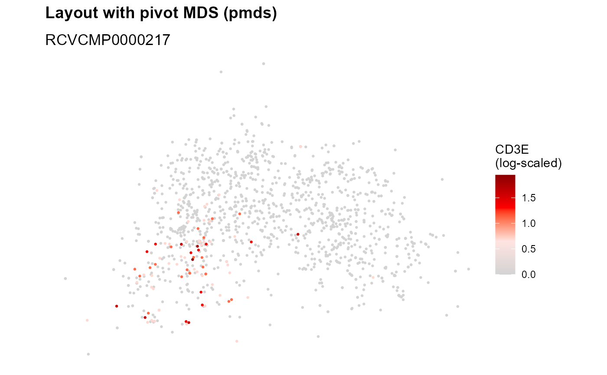

Plot 2D graph layouts
Plot2DGraph.RdPlot 2D component graph layouts computed with ComputeLayout and
optionally color nodes by certain attributes. Edges can also be visualized
by setting map_edges; however, since component graphs tend to be very
large, this can take a long time to draw.
Usage
Plot2DGraph(
object,
cells,
marker = NULL,
assay = NULL,
layout_method = c("pmds", "wpmds", "fr", "kk", "drl"),
colors = c("lightgrey", "mistyrose", "red", "darkred"),
map_nodes = TRUE,
map_edges = FALSE,
log_scale = TRUE,
node_size = 0.5,
edge_width = 0.3,
show_Bnodes = FALSE,
collect_scales = FALSE,
return_plot_list = FALSE,
...
)Arguments
- object
A
Seuratobject- cells
A character vector with cell IDs
- marker
Name of a marker to colors nodes/edges by
- assay
Name of assay to pull data from
- layout_method
Select appropriate layout previously computed with
ComputeLayout- colors
A character vector of colors to color marker counts by
- map_nodes, map_edges
Should nodes and/or edges be mapped?
- log_scale
Convert node counts to log-scale with
log1p- node_size
Size of nodes
- edge_width
Set the width of the edges if
map_edges = TRUE- show_Bnodes
Should B nodes be included in the visualization? This option is only applicable to bipartite graphs. Note that by removing the B nodes, all edges are removed from the graph and hence,
map_edgeswill have no effect.- collect_scales
Collect color scales so that their limits are the same. This can be used to make sure that the colors are comparable across markers.
- return_plot_list
Instead of collecting the plots in a grid, return a list of
ggplotobjects.- ...
Not yet implemented
Examples
library(pixelatorR)
pxl_file <- system.file("extdata/PBMC_10_cells",
"Sample01_test.pxl",
package = "pixelatorR")
seur <- ReadMPX_Seurat(pxl_file, overwrite = TRUE)
#> ✔ Created a 'Seurat' object with 10 cells and 26 targeted surface proteins
seur <- LoadCellGraphs(seur, load_as = "Anode", cells = colnames(seur)[1:10])
#> → Loading 10 edgelist(s) as Anode graph(s)
#> ✔ Successfully loaded 10 CellGraph object(s).
seur[["mpxCells"]] <- KeepLargestComponent(seur[["mpxCells"]])
#> ℹ Keeping largest component for 10 graphs
#> ℹ Removed 7 out of 2620 nodes
#> ℹ Removed 88 out of 1122 nodes
#> ℹ Removed 22 out of 1727 nodes
#> ℹ Removed 60 out of 2497 nodes
#> ℹ Removed 124 out of 3162 nodes
#> ℹ Removed 30 out of 868 nodes
#> ℹ Removed 21 out of 1082 nodes
#> ℹ Removed 158 out of 1230 nodes
#> ℹ Removed 591 out of 725 nodes
#> ℹ Removed 18 out of 3582 nodes
seur <- ComputeLayout(seur, layout_method = "pmds", dim = 2)
#> ℹ Computing layouts for 10 graphs
Plot2DGraph(seur, cells = colnames(seur)[1], marker = "HLA-ABC")
